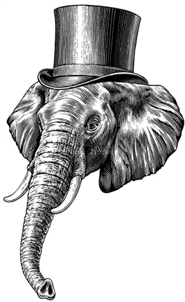

DEFENSE
"Je sais maintenant que chaque homme porte en lui et comme au-dessus de lui, un fragile et complexe échafaudage d'habitudes, réponses, réflexes, mécanismes, préoccupations, rêves et implications qui s'est formé et continue à se transformer par les attouchements perpétuels de ses semblables." Michel TOURNIER
Les mécanismes de défense psychique sont des processus naturels de notre fonctionnement mental. Ce sont eux qui nous permettent de surmonter des situations complexes dans leur compréhension émotionnelle. Lorsqu'ils ne sont plus adaptés, le sujet peut perdre son équilibre.
Nous avons tous des mécanismes de défense, que nous nous sentions totalement sain d'esprit ou que nous ressentions un mal-être. Agressivité, discours incohérents, timidité, comportement imprévisible... Il s'agit là de mécanismes de défense que nous utilisons pour nous protéger. Lors d'une situation difficile, on a tendance à s'armer en utilisant ces modalités de protection. Ce sont ces processus psychologiques inconscients qui nous permettent de réduire les tensions psychiques, notamment l'anxiété et la dépression.
Ces mécanismes sont des distorsions cognitives et leur fonction est double, car en plus de protéger la cohésion de l'appareil psychique, ils nous permettent de faciliter notre adaptation au monde. En général, on les utilise quotidiennement et de façon banale. Ces mécanismes de défense engendrent les fameux traits de caractère qui nous caractérisent. On pourrait les voir comme étant notre "systàme immunitaire psychique".
Bien souvent, cette défense inconsciente fonctionne de manière ponctuelle : le sujet oublie l'inconciliable et continue sa vie normalement. Mais il arrive que la structure s'effondre lorsque les mécanismes de défense mis en exergue ne sont pas ou plus adaptés : c'est alors que le sujet développe des symptômes.
Plus précisément, notre résilience, notre capacité à faire face aux tensions, aux conflits, aux dangers perçus à l’intérieur de nous ou dans le monde extérieur, mobilise deux types d’opérations mentales : les mécanismes de défense et les processus de coping. Les mécanismes de défense sont des processus mentaux automatiques qui s’activent en dehors du contrôle de la volonté et dont l’action demeure inconsciente. le sujet pouvant au mieux percevoir le résultat de leurs interventions et s’en étonner. S'ajoute des processus de coping, mot traduit en français par stratégies d’adaptation ou processus de maîtrise, qui sont des opérations mentales volontaires, donc conscientes, par lesquelles le sujet choisi délibérément une réponse à un problème interne et/ou externe.
Défense et coping coexistent en chacun de nous. Ils peuvent être des processus adaptatifs ou mal adaptatifs. Ce caractère fonctionnel ou dysfonctionnel dépend à la fois du type de défense ou de coping, de l’intensité et de la durée de sa mise en jeu, mais aussi du contexte interne et externe de leur mobilisation et des interactions éventuelles entre défense et coping. Enfin, défense et coping s’activent habituellement conjointement ou successivement et contribuent ensemble à notre adaptation aux difficultés de la vie quotidienne, comme aux situations difficiles de la vie ou aux traumatismes majeurs. Ils constituent donc deux dimensions entremêlées de nos moyens de faire face aux problèmes intérieurs et extérieurs.
Nous avons tous des mécanismes de défense, que nous nous sentions totalement sain d'esprit ou que nous ressentions un mal-être. Agressivité, discours incohérents, timidité, comportement imprévisible... Il s'agit là de mécanismes de défense que nous utilisons pour nous protéger. Lors d'une situation difficile, on a tendance à s'armer en utilisant ces modalités de protection. Ce sont ces processus psychologiques inconscients qui nous permettent de réduire les tensions psychiques, notamment l'anxiété et la dépression.
Ces mécanismes sont des distorsions cognitives et leur fonction est double, car en plus de protéger la cohésion de l'appareil psychique, ils nous permettent de faciliter notre adaptation au monde. En général, on les utilise quotidiennement et de façon banale. Ces mécanismes de défense engendrent les fameux traits de caractère qui nous caractérisent. On pourrait les voir comme étant notre "systàme immunitaire psychique".
Bien souvent, cette défense inconsciente fonctionne de manière ponctuelle : le sujet oublie l'inconciliable et continue sa vie normalement. Mais il arrive que la structure s'effondre lorsque les mécanismes de défense mis en exergue ne sont pas ou plus adaptés : c'est alors que le sujet développe des symptômes.
Plus précisément, notre résilience, notre capacité à faire face aux tensions, aux conflits, aux dangers perçus à l’intérieur de nous ou dans le monde extérieur, mobilise deux types d’opérations mentales : les mécanismes de défense et les processus de coping. Les mécanismes de défense sont des processus mentaux automatiques qui s’activent en dehors du contrôle de la volonté et dont l’action demeure inconsciente. le sujet pouvant au mieux percevoir le résultat de leurs interventions et s’en étonner. S'ajoute des processus de coping, mot traduit en français par stratégies d’adaptation ou processus de maîtrise, qui sont des opérations mentales volontaires, donc conscientes, par lesquelles le sujet choisi délibérément une réponse à un problème interne et/ou externe.
Défense et coping coexistent en chacun de nous. Ils peuvent être des processus adaptatifs ou mal adaptatifs. Ce caractère fonctionnel ou dysfonctionnel dépend à la fois du type de défense ou de coping, de l’intensité et de la durée de sa mise en jeu, mais aussi du contexte interne et externe de leur mobilisation et des interactions éventuelles entre défense et coping. Enfin, défense et coping s’activent habituellement conjointement ou successivement et contribuent ensemble à notre adaptation aux difficultés de la vie quotidienne, comme aux situations difficiles de la vie ou aux traumatismes majeurs. Ils constituent donc deux dimensions entremêlées de nos moyens de faire face aux problèmes intérieurs et extérieurs.

La classification la plus habituelle distingue les défenses matures, les défenses dites névrotiques et les défenses immatures en fonction de leur niveau adaptatif. Les défenses matures contribuent à la santé psychique et physique. Les défenses névrotiques d’abord liées aux névroses où elles sont prédominantes sont maintenant plutôt appelées défenses intermédiaires car elles sont utilisées par chacun d’entre nous. Les défenses immatures, quand elles prédominent, sont liées aux troubles psychiatriques, comme les troubles de l'humeur, de la personnalité, des toxicomanies, l'anxiété ou encore les psychoses.
Certains auteurs ont insisté sur le fait que tous les mécanismes de défense pouvaient servir l’adaptation et aider à surmonter l’adversité. L’efficacité adaptative d’un mécanisme de défense dépend de sa nature, mais aussi de l’intensité et de la souplesse de sa mise en jeu, et des circonstances. Pour chaque mécanisme de défense, les modes d’activation légère tendent à être fonctionnelles, et les variantes plus intenses tendent à être dysfonctionnelles.
Le niveau de stress subi intervient aussi dans l’adaptation. Dans les stress majeurs, les mécanismes de défenses réputés les plus immatures (agression passive, hypocondrie, fantaisie, projection, etc.), dysfonctionnels ou pathologiques (dystortion, narcissisme, déni, conversion, clivage, etc.) ou mature (intellectualisation, humour, sublimation, anticipation, altruisme, etc.) peuvent avoir une fonction protectrice. Les stress légers peuvent ne nécessiter que les mécanismes de défense matures, les stress plus significatifs peuvent requérir les mécanismes intermédiaires névrotiques pour la plupart des sujets et les stress intenses peuvent réclamer l’activation brève des défenses immatures. Dans les situations extrêmes, même les mécanismes habituellement considérés comme les plus pathologiques peuvent servir à surmonter l’adversité.
Certaines défenses sont dirigées contre les pensées ou les cognitions et d'autres dirigées directement contre la non gestion émotionnelle. Par exemple, l’humour est un mécanisme modifiant les cognitions tandis que la somatisation, définie comme le déplacement d’un affect douloureux sur une partie du corps, est un exemple d’une défense centrée sur l’émotion.
Volontairement, car la littérature répertorie plus de 40 mécanismes de défense, ils ne seront pas précisés ici.
Certains auteurs ont insisté sur le fait que tous les mécanismes de défense pouvaient servir l’adaptation et aider à surmonter l’adversité. L’efficacité adaptative d’un mécanisme de défense dépend de sa nature, mais aussi de l’intensité et de la souplesse de sa mise en jeu, et des circonstances. Pour chaque mécanisme de défense, les modes d’activation légère tendent à être fonctionnelles, et les variantes plus intenses tendent à être dysfonctionnelles.
Le niveau de stress subi intervient aussi dans l’adaptation. Dans les stress majeurs, les mécanismes de défenses réputés les plus immatures (agression passive, hypocondrie, fantaisie, projection, etc.), dysfonctionnels ou pathologiques (dystortion, narcissisme, déni, conversion, clivage, etc.) ou mature (intellectualisation, humour, sublimation, anticipation, altruisme, etc.) peuvent avoir une fonction protectrice. Les stress légers peuvent ne nécessiter que les mécanismes de défense matures, les stress plus significatifs peuvent requérir les mécanismes intermédiaires névrotiques pour la plupart des sujets et les stress intenses peuvent réclamer l’activation brève des défenses immatures. Dans les situations extrêmes, même les mécanismes habituellement considérés comme les plus pathologiques peuvent servir à surmonter l’adversité.
Certaines défenses sont dirigées contre les pensées ou les cognitions et d'autres dirigées directement contre la non gestion émotionnelle. Par exemple, l’humour est un mécanisme modifiant les cognitions tandis que la somatisation, définie comme le déplacement d’un affect douloureux sur une partie du corps, est un exemple d’une défense centrée sur l’émotion.
Volontairement, car la littérature répertorie plus de 40 mécanismes de défense, ils ne seront pas précisés ici.
EN RELATION


DISSOCIATION
SYMPTOME
PSYCHOSOMA
TOXICOMANIE
EMOTION
(ne pas voir)
REPETITION